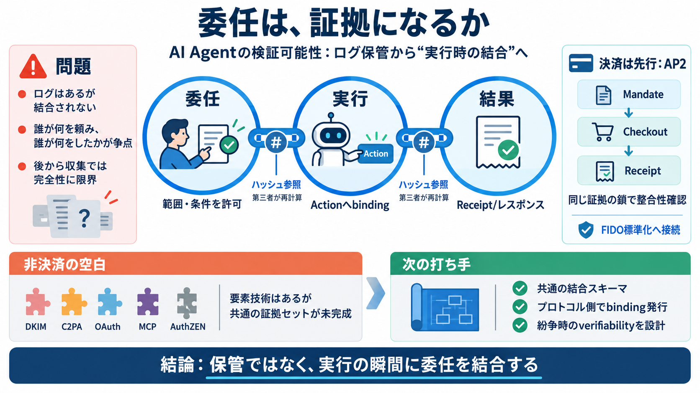

Agent Payments Protocol (AP2) | AI Wiki
On April 28, 2026, Google transferred ownership of AP2 to the FIDO Alliance, the same standards body that maintains FIDO…

On April 28, 2026, Google transferred ownership of AP2 to the FIDO Alliance, the same standards body that maintains FIDO…
## What Is AP2? — A Working Definition The Agent Payments Protocol (AP2) is an open protocol that defines how AI agents…
As of May 2026, AP2 has been donated to the FIDO Alliance for open, community-led governance. Two new FIDO working group…
| Initiative | Origin | Focus | --- | Agent Payments Protocol (AP2) | Announced by Google in September 2025; contribut…
### Google Donates AP2 to FIDO Alliance Google transfers ownership of the Agent Payments Protocol to the FIDO Alliance …